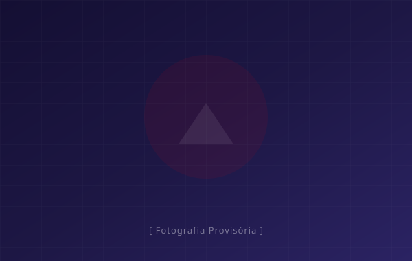

Concelho de Anadia
Freguesias
Proximidade, rigor e compromisso com o desenvolvimento de todas as 10 freguesias do nosso concelho.

Freguesia de Avelãs de Caminho
VISITAR PÁGINA
Freguesia de Avelãs de Cima
VISITAR PÁGINA
Freguesia de Moita
VISITAR PÁGINA
Freguesia de Sangalhos
VISITAR PÁGINA
Freguesia de São Lourenço do Bairro
VISITAR PÁGINA
União das Freguesias de Tamengos, Aguim e Óis do Bairro
VISITAR PÁGINA
Freguesia de Vila Nova de Monsarros
VISITAR PÁGINA
Freguesia de Vilarinho do Bairro
VISITAR PÁGINA